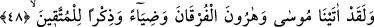
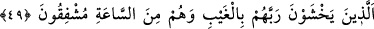
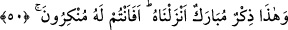
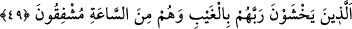
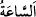

TAKVA SAHİPLERİ İÇİN
BİR IŞIK BİR ÖĞÜT
48. Andolsun biz, Mûsâ ve Hârun’a, takvâ sahipleri için bir ışık, bir öğüt ve
Furkân’ı verdik.
49. (O takvâ sahipleri ki) onlar, görmedikleri halde Rablerine candan saygı
gösterirler. Yine onlar, kıyâmetten korkan kimselerdir.
50. İşte bu (Kur’an) da, bizim indirdiğimiz hayırlı ve faydalı bir öğüttür. Şimdi onu
inkâr mı ediyorsunuz?
“Andolsun biz, Mûsâ ve Hârun’a, takvâ sahipleri için bir ışık, bir öğüt ve Furkan’ı
verdik.” Yâni, Allâh’a yemîn olsun ki o ikisine hak ile bâtılı birbirinden ayırt eden bir
kitap olma, şaşkınlık ve cehâlet karanlıklarında kendisiyle aydınlanılan bir ışık ve
insanların kendisinden öğüt aldıkları bir zikir olma özelliklerini kendisinde toplayan bir
kitap verdik. Bütün bu sıfatlar ile kastedilen birdir. O da Tevrat’tır. Takvâ sâhipleri için
âyette özellikle zikredilmiştir. Çünkü onun nurlarıyla aydınlanan ve eserlerinin
ganîmetlerinden faydalananlar onlardır.
49. (O takvâ sahipleri ki) onlar, görmedikleri halde Rablerine candan saygı
gösterirler. Yine onlar, kıyâmetten korkan kimselerdir.
“(O takvâ sahipleri ki) onlar, görmedikleri halde” yâni, onlardan gâib olduğu,
onlara görünmediği halde “Rablerine candan saygı gösterirler.” O’nun azâbından
korkarlar.
Burada kâfirlere târiz/dokundurma vardır. Çünkü onlar uyarıldıkları azâbı görmedikçe
îkaz ve korkutmadan etkilenmezler.
“Yine onlar, kıyâmetten korkan kimselerdir.” “
” kendisinde kıyâmetin vukû
bulacağı vaktin adıdır. Kıyâmete “
” denilmesinin sebebi, az bir vakitte büyük bir
işin vukû bulacak olmasındandır. Öte yandan saate “saat” denilmesinin sebebi, vuku
bulacak hâdiseye sür’atle koşmasındandır. Onun mesafesi nefeslerdir.
Râgıb der ki: “
”, zamânın bölümlerinden bir bölümdür. Onunla kıyâmet ifade